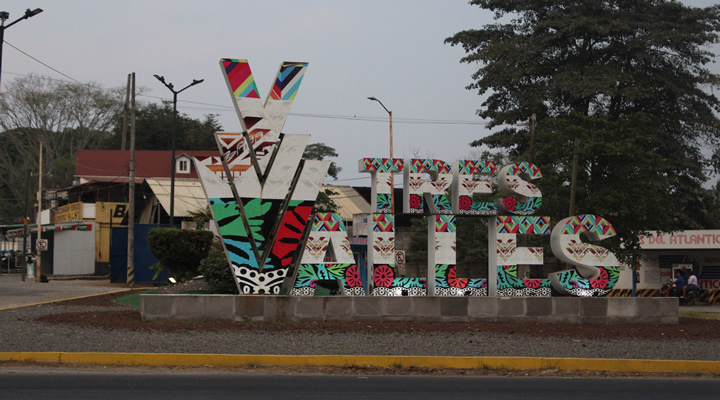
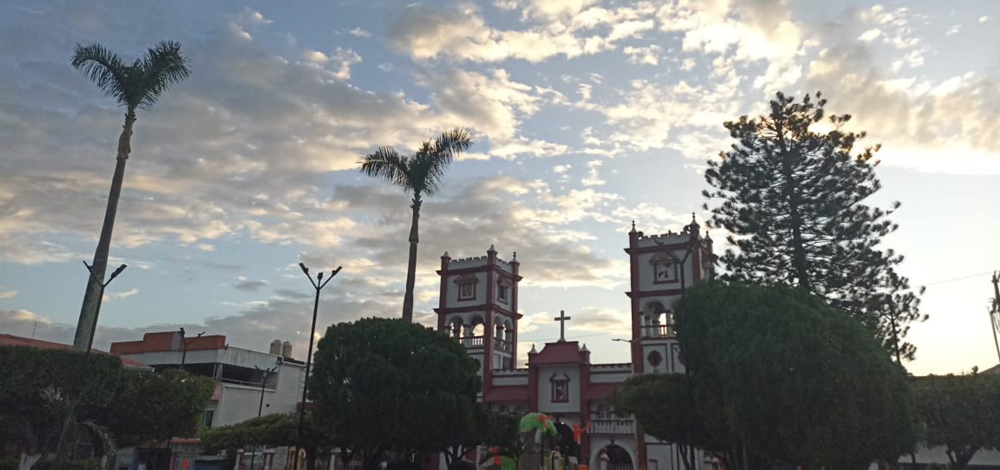

Música Relajante
El municipio de Tres Valles es un municipio del estado mexicano de Veracruz, declarado municipio libre por decreto el 25 de noviembre de 1988. Se encuentra ubicado en la baja cuenca del Papaloapan, colinda con el estado de Oaxaca y los municipios de Tierra Blanca y Cosamaloapan.

¡En este pequeño portal veremos los lugares de interes de nuestro querido Tres Valles!
Tres valles cuenta con una gran cantidad de negocios locales, lo cual nos habla del espíritu trabajador de sus habitantes!
El eje central de la ciudad es el tanque de agua, muchos lo toman como referencia para dar indicaciones.

En tres valles se fomenta el cuidado de las áreas verdes con el parque ecológico "Las Águilas".

El parque Miguel Hidalgo es muy importante para el municipio, allí se encuentra el ayuntamiento y un espacio concurrido tanto normalmente tanto como en eventos.


También se encuentra la iglesia del municipio, donde también se organizan eventos.

¡Por ciertos periodos de tiempo se desvela una feria con distintos juegos y tipos de comida!
.jpeg)
Video de Tres Valles